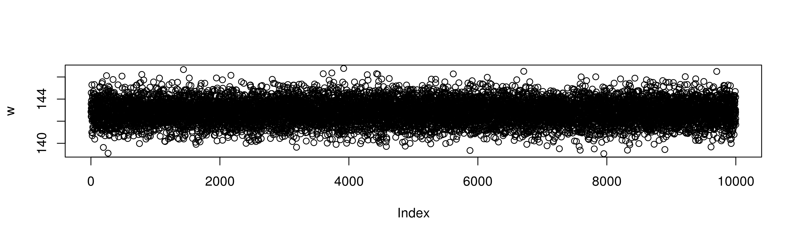
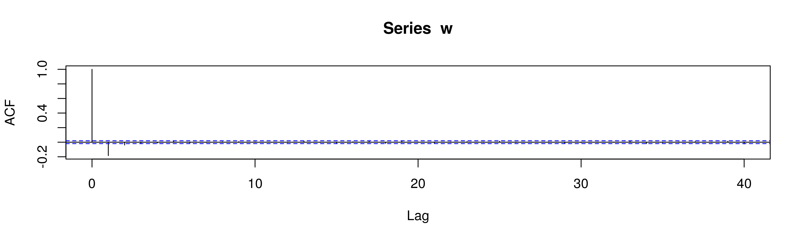

시계열 8주차 2회
연습문제 7.6, 모형2: ARIMA(0,1,1)
\[ (1-B)Z_t=5+(1-0.5B)\epsilon_t \] 정리하면 \[ Z_t=5+Z_{t-1}+\epsilon_t-0.5\epsilon_{t-1} \]
연습문제 7.6, 모형3: ARIMA(1,1,1)
\[ (1-0.3B)(1-B)Z_t=100+(1-0.5B)\epsilon_t \] 정리하면 \[ Z_t=100+1.3Z_{t-1}-0.3Z_{t-2}+\epsilon_t-0.5\epsilon_{t-1} \]
\[ (1-0.3B)W_t=100+(1-0.5B)\epsilon_t \] \[ W_t-0.3W_{t-1}=100+\epsilon_t-0.5\epsilon_{t-1} \] \[ \mu-0.3\mu=100 \] \[ \mu=100/0.7 \]

Autocorrelations of series ‘w’, by lag
1 2 3 4 5
-0.184 -0.039 -0.021 -0.012 0.018 
Partial autocorrelations of series ‘w’, by lag
1 2 3 4 5
-0.184 -0.075 -0.044 -0.029 0.007 
ACF그림을 보면 MA(1)처럼 보인다. 즉 아래모형인듯하다. \[ W_t=100/0.7+\epsilon_t+\theta\epsilon_{t-1} \] SACF결과로부터 \(\hat{\rho}_1=-0.184\)이다. MA(1)의 이론적인 ACF의 값은 \[ \rho_1=\frac{\theta}{1+\theta^2} \] 이므로, \[ -0.184=\frac{\theta}{1+\theta^2} \] 를 풀면 \(\theta\)를 추정할 수 있다. \[ 0.184\theta^2+\theta+0.184=0 \]
[1] -0.1906908
[1] -5.244092우리는 가역인 모델에 관심이 있으므로 \[\theta=-0.191\] 이라고 볼 수 있다.
즉 아래의 모형을 적합할 수 있다. \[ \mbox{적합된모형}: W_t=\epsilon_t-0.191\epsilon_{t-1} \]
하지만 실제모델은 아래와 같다. \[ \mbox{실제모형}: W_t=0.3W_{t-1}+\epsilon_t-0.5\epsilon_{t-1} \]
(모델1) \[ W_t=\epsilon_t-0.191\epsilon_{t-1} \]
(모델2) \[ W_t=0.3W_{t-1}+\epsilon_t-0.5\epsilon_{t-1} \]
사실 위의 두 모형은 거의 구별할 수 없다.
먼저 (모델1)의 이론적인 ACF는 아래와 같다.
| \(\rho_1\) | \(\rho_2\) | \(\rho_3\) | \(\rho_4\) | \(\rho_5\) | \(\dots\) |
|---|---|---|---|---|---|
| −0.184 | 0 | 0 | 0 | 0 |
이론적인 PACF는 아래와 같다.
| $_{11} $ | \(\phi_{22}\) | \(\phi_{33}\) | \(\phi_{44}\) | \(\phi_{55}\) | \(\dots\) |
|---|---|---|---|---|---|
| −0.184 | -0.0350423953 | -0.0066819524 | -0.0012741846 | -0.0002429753 |
##
find_phi<-function(rho){
phi_11<-rho[1]
denominator2<-c(1,rho[1],
rho[1],1)
denominator3<-cbind(1,rho[1],rho[2],
rho[1],1,rho[1],
rho[2],rho[1],1)
denominator4<-cbind(1,rho[1],rho[2],rho[3],
rho[1],1,rho[1],rho[2],
rho[2],rho[1],1,rho[1],
rho[3],rho[2],rho[1],1)
denominator5<-cbind(1,rho[1],rho[2],rho[3],rho[4],
rho[1],1,rho[1],rho[2],rho[3],
rho[2],rho[1],1,rho[1],rho[2],
rho[3],rho[2],rho[1],1,rho[1],
rho[4],rho[3],rho[2],rho[1],1)
dim(denominator2)<-c(2,2)
dim(denominator3)<-c(3,3)
dim(denominator4)<-c(4,4)
dim(denominator5)<-c(5,5)
numerator2<-cbind(denominator2[,-2],rho[1:2])
numerator3<-cbind(denominator3[,-3],rho[1:3])
numerator4<-cbind(denominator4[,-4],rho[1:4])
numerator5<-cbind(denominator5[,-5],rho[1:5])
phi_22<-det(numerator2)/det(denominator2)
phi_33<-det(numerator3)/det(denominator3)
phi_44<-det(numerator4)/det(denominator4)
phi_55<-det(numerator5)/det(denominator5)
c(phi_11,phi_22,phi_33,phi_44,phi_55)
}
print(find_phi(c(-0.184,0,0,0,0)))[1] -0.1840000000 -0.0350423953 -0.0066819524 -0.0012741846 -0.0002429753교재 p.229에 제시된 MA(1)과정의 PACF공식을 참고하여 계산해도 된다. 예를들면 Lag=2일 경우는 아래와 같다.
| 이제 (모델2)의 ACF를 따져보자. |
| \[ W_t=\frac{1-0.5B}{1-0.3B}\epsilon_t=(1+0.3B+0.3^2B^2+0.3^3B^3+\dots)\epsilon_t-0.5B(1+0.3B+0.3^2B^2+0.3^3B^3+\dots)\epsilon_t. \] |
| 이다. lag=0임을 가정하면, |
| | | \(\epsilon_t\)의 계수 | \(\epsilon_{t-1}\)의 계수 | \(\epsilon_{t-2}\)의 계수 | \(\epsilon_{t-3}\)의 계수 | \(\epsilon_{t-4}\)의 계수 | \(\dots\) | |—|———————|———————|———————|———|———|———| |\(W_t\) | 1 | 0.3-0.5 | 0.3(0.3-0.5) | 0.3^2(0.3-0.5) | 0.3^3(0.3-0.5) |\(W_t\) | 1 | 0.3-0.5 | 0.3(0.3-0.5) | 0.3^2(0.3-0.5) | 0.3^3(0.3-0.5) |
| 이므로, \(\gamma_0=1+\frac{(0.3-0.5)^2}{1-0.3^2}=1.043956\)가 된다. |
| lag=1이라고 하면, |
| | | \(\epsilon_t\)의 계수 | \(\epsilon_{t-1}\)의 계수 | \(\epsilon_{t-2}\)의 계수 | \(\epsilon_{t-3}\)의 계수 | \(\epsilon_{t-4}\)의 계수 | \(\dots\) | |—|———————|———————|———————|———|———|———| |\(Z_t\) | 1 | 0.3-0.5 | 0.3(0.3-0.5) | 0.3^2(0.3-0.5) | 0.3^3(0.3-0.5) |\(Z_{t-1}\) | | 1 | 0.3-0.5 | 0.3(0.3-0.5) | 0.3^2(0.3-0.5) | |
| 이므로, \(\gamma_1=(0.3-0.5)+\frac{0.3(0.3-0.5)^2}{1-0.3^2}=-0.1868132\)가 된다. 따라서 \[ \rho_1=\frac{ -0.1868132}{1.043956}=-0.1789474 \] 가 된다. 이후의 ARMA과정은 \[ \rho_2=\rho_1\phi=\rho_1\times 0.3 \] \[ \rho_3=\rho_1\times 0.3^2 \] 등을 따르므로, (모델2)의 이론적인 ACF와 PACF는 아래와 같다. |
| | \(\rho_1\)| \(\rho_2\) | \(\rho_3\) | \(\rho_4\) | \(\rho_5\) | \(\dots\) | |———|———-|———-|———-|———-|———| | -0.1789474 | -0.05368422 | -0.01610527 | -0.00483158 | -0.00483158 | | |
| 이론적인 PACF는 아래와 같다. |
| | $_{11} $| \(\phi_{22}\) | \(\phi_{33}\) | \(\phi_{44}\) | \(\phi_{55}\) | \(\dots\) | |———|———-|———-|———-|———-|———| | -0.17894740 | -0.08854169 | -0.04415586 | -0.02206360 | -0.01456021 | | |
rho1<- -0.1789474
rho<-c(rho1,rho1*0.3,rho1*0.3^2,rho1*0.3^3,rho1*0.3^3)
print(rho)
print(find_phi(rho))[1] -0.17894740 -0.05368422 -0.01610527 -0.00483158 -0.00483158
[1] -0.17894740 -0.08854169 -0.04415586 -0.02206360 -0.01456021두 모델의 이론적인 ACF와 PACF를 비교하여보자.
| \(\rho_1\) | \(\rho_2\) | \(\rho_3\) | \(\rho_4\) | \(\rho_5\) | \(\dots\) | |
|---|---|---|---|---|---|---|
| 모델1 | −0.184 | 0 | 0 | 0 | 0 | |
| 모델2 | -0.1789474 | -0.05368422 | -0.01610527 | -0.00483158 | -0.00483158 |
| $_{11} $ | \(\phi_{22}\) | \(\phi_{33}\) | \(\phi_{44}\) | \(\phi_{55}\) | \(\dots\) | |
|---|---|---|---|---|---|---|
| 모델1 | −0.184 | -0.0350423953 | -0.0066819524 | -0.0012741846 | -0.0002429753 | |
| 모델2 | -0.17894740 | -0.08854169 | -0.04415586 | -0.02206360 | -0.01456021 |
정말 두 모델을 구분할 수 있을까? 그리고 구분하는 것이 의미가 있을까?
그렇다면 아래의 모델들은 구분할 수 있을까? \[ \begin{cases} Z_t=\epsilon_t \\ Z_t=0.1 Z_{t-1}+\epsilon_t \end{cases} \]
\[ \begin{cases} Z_t=\epsilon_t \\ Z_t=0.01 Z_{t-1}+\epsilon_t \end{cases} \]
\[ \begin{cases} Z_t=\epsilon_t \\ Z_t=0.00000000000000000001 Z_{t-1}+\epsilon_t \end{cases} \]
..